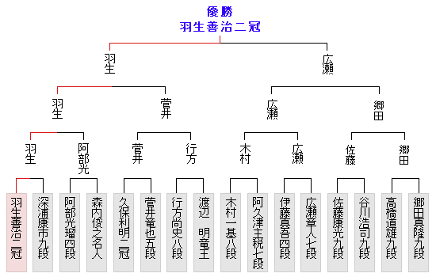

第5回朝日杯将棋オープン トーナメント表（本戦）

トーナメント表
- 第7回 一次予選
- 第7回 二次予選
- 第7回 本戦
- 第6回 一次予選
- 第6回 二次予選
- 第6回 本戦
- 第5回 一次予選
- 第5回 二次予選
- 第5回 本戦
- 第4回 一次予選
- 第4回 二次予選
- 第4回 本戦
- 第3回 一次予選
- 第3回 二次予選
- 第3回 本戦
- 第2回 一次予選
- 第2回 二次予選
- 第2回 本戦
- 第1回 一次予選
- 第1回 二次予選
- 第1回 本戦
ご利用にあたって
これまでの朝日杯将棋オープン戦の棋譜、観戦記をぜひご覧下さい。
朝日新聞社〔将棋・ニュース〕（asahi.com）にて好評掲載中！
盤面をご覧になるには、Flash Player 9以上、または、Javaプラグインが必要です。
[Flash
Playerのダウンロード]（アドビシステムズ社）
[Javaプラグインのダウンロード]
（Javaは、米国のSunMicrosystems.Inc.の商標です）
お使いのPC環境やネットワーク環境などによっては正常に表示されないことがありますので、ご了解ください。